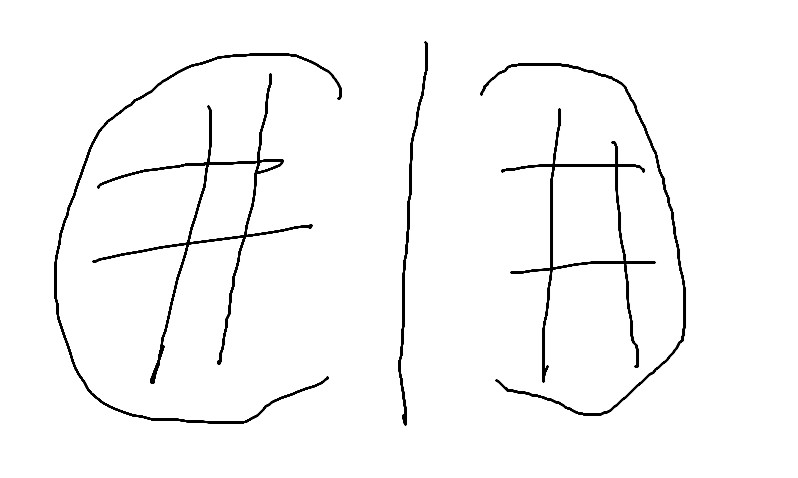
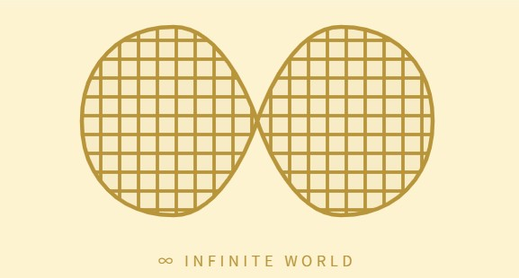
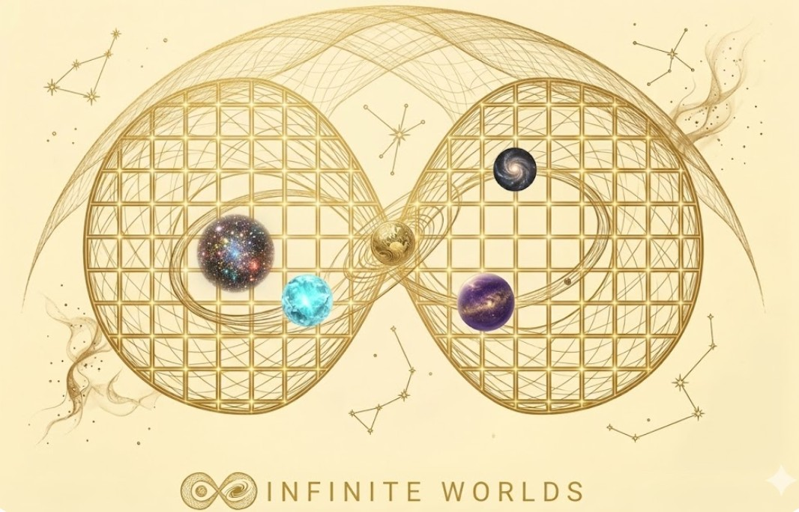

솔직히 말하면, 처음엔 그냥 네이버 블로그 쓰려고 했다. 익숙하고, 편하고, 검색도 잘 된다고 하니까. 근데 뭔가 자꾸 마음에 걸렸다.
웹3에 관심이 있다고 하면서, 내 콘텐츠를 남의 플랫폼에 올리는 게 맞나? 수익화도 결국 네이버 규칙 안에서만 가능하고, 언젠가 정책이 바뀌면 그동안 쌓은 게 다 날아갈 수도 있는데. 나중에 NFT도 연동하고 싶고, Ellie 갤러리도 붙이고 싶은데 — 네이버에서는 꿈도 못 꿀 이야기다.
"완전 내 것. 그게 웹3 정신이잖아."
그래서 AI C 한테 물어봤다. "나 블로그 만들고 싶은데, 어디서 해?" 그게 이 모든 고생의 시작이었다. ㅋㅋ
이름부터 정하자 — KENZ CREW의 탄생
사실 이 이름은 내가 지은 게 아니다. Ellie가 지었다. Kenny, Ellie, Noella, Jaz — 가족 네 명의 이름 앞글자를 따서 KENZ. 처음 들었을 때 너무 잘 지어서 내가 더 놀랐다. 우리 가족 단톡방 이름도 이미 이거다. ㅋㅋ 브랜드가 아니라 진짜 우리 가족의 이름 같은 느낌 — 그래서 더 마음에 들었다.
슬로건도 한참 고민했다. "가족이 함께 읽는 미래", "우리가 보는 내일", "Living Beyond the Curve"... 결국 셋 다 썼다. 버리기 아까워서 ㅋㅋ 각자 역할이 생겼다. 로고 옆엔 "우리가 보는 내일", 그 밑엔 영어 슬로건. 페이지 맨 아래 푸터엔 "가족이 함께 읽는 미래". 나름 완벽한 배치다.
색깔 고르는 것도 일이다
다크 블랙에 네온 — 너무 사이버. 버건디에 크림 — 감성은 있는데 뭔가 아쉬워. 화이트에 골드 — 딱이다. 고급스럽고 미래적이면서도 따뜻한 느낌. 나중에 질리면 네이비 골드로 바꿀 수 있다는 것도 마음에 들었다.
처음 까만 배경으로 만들어줬을 때 한 마디 했다. "너무 까만 거 같아서 배경이..." 그랬더니 C 가 바로 밝은 버전 네 가지를 만들어줬다. 골라보는 재미가 있었다.
로고 사건 — 손그림까지 그렸는데도
이게 가장 웃긴 파트다. INFINITE WORLD — 무한한 세상, 무한한 가능성. 무한대 기호 안에 지구본 격자를 넣자는 아이디어는 좋았다. 근데 막상 C 가 그려온 건 크리스찬 디올 로고를 연상케 하는... 다시 그려달라 했더니 외계인 안경을 그려왔다.. AI G는 파리눈을.... ㅠㅠ 결국 내가 직접 손으로 그려서 "이 느낌이야!" 라고 보여주면서 AI O가 결국 그려왔다. 두 개의 지구본이 무한대로 연결되는 그 이미지 — 지금 홈페이지에서 볼 수 있다. AI들아 반성해라.
번외) 크리스찬디올 처음 그려왔을때 너무 웃었는데 백업해놓는걸 깜빡했다. 지금 다시 그거 그려달라했더니.. 이제 또 못그린..... @.@ 몇번 실갱이 하다가 결국 내가 손으로 그려왔다는건 안비밀.



GitHub, Vercel — 생전 처음 들어본 것들
코딩은 대학때이후로 내 삶에서 사라진지 오래. GitHub가 뭔지도 몰랐다. 그냥 "무료로 내 사이트 올릴 수 있는 곳"이라고 이해하고 가입했다. 처음엔 파일 이름에 괄호가 들어가서 사이트가 안 열렸다. index (1).html — 이게 문제였다. 그 다음엔 Issues 탭에 파일을 올렸다. ㅋㅋㅋ (Issues 탭은 지금도 뭔지 모른다. 어떻게 지우는지도 모른다.... ㅜ)
Vercel 연동하고 나서부터는 진짜 자동화가 됐다. GitHub에 파일 올리면 30초 안에 사이트에 반영된다. 이게 돼? 싶었는데 진짜 된다. 완전 무료로.
AI C , 솔직한 후기
솔직히 말하면 여러 AI를 돌아다녔다. 지금은(?) AI C 로 정착했다. 코드는 확실히 C 가 잘하더라고. 근데 단점은, 진짜 돈 먹는 하마다. 뭐 좀 하다 보면 "몇 시까지 기다려" 라고 한다. 처음 며칠은 진짜 기다렸는데, 다른 일(업무)도 해야 하고 해서 그냥 유료 결제를 해버렸다.
그래도 고등학교, 대학 때 HTML 조금 그적거려본 이후 손도 안 댔는데, 불혹의 나이에 책 한 번 펼쳐보지 않고도 홈페이지를 뚝딱 만들다니.. 언벌리버블! 물론 내가 직접 수십 번 수정 요청하고, 파일 올리고, 새로고침하고... 그 노동력은 별도지만 ㅎㅎ. 그리고 로고는 외계인처럼 그려놔서 결국 다른 데 가서 만들어 왔다는 건 안비밀이지만...
그래서 지금은?
kenzcrew.github.io — 이게 이제 내 공간이다. 완전히 내 것. 네이버 눈치 안 봐도 되고, 정책 바뀔 걱정 안 해도 된다. 나중에 Ellie 그림 갤러리도 붙이고, NFT 민팅도 연동하고, 뉴스레터도 붙일 수 있다. 지금은 시작일 뿐이다.
카테고리는 네 개 — 미래 교육, 매크로 자산학, 웹3 & 크립토, AI & 넥스트. 전부 내 삶에서 진짜 고민하고 있는 것들이다. 전문가의 분석이 아니라, 한 사람의 도전과 실패와 배움이 담긴 이야기들. 그게 이 블로그의 정체성이다.
일단 탔다.
자리는 가면서 찾는다.
— KENZ CREW 첫 번째 챕터, 시작.